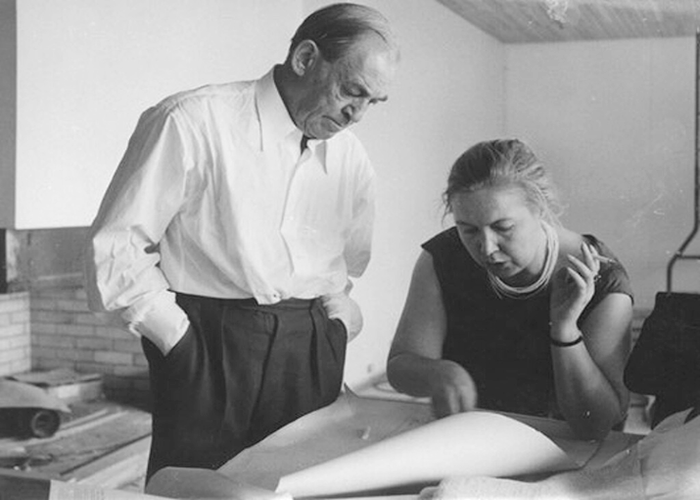

George Nelson was an industrial designer who worked as a director of Herman Miller and caught the eyes of the founders of Herman Miller through his creation of Storage Wall, the first modular storage system.Finnish-American architect and designer Eero Saarinen was appointed director of Cranbrook Academy of Art.British textile designer Lucienne Day OBE developed a new style of abstract pattern-making in post-war British textiles and was credited with revolutionizing office design.

Aino Maria Marsio-Aalto, Finnish architect, co-founded design company Artek and her works are displayed permanently at MoMa in New York.
Mel Smillow was an American furniture designerknown for being a partner in Smilow-Thielle, a mid-twientieth-century firm known for producing affordable modern furniture.
Alvar Aalto, esteemed glass designer and co-founder of Artek Company, considered his L-leg design his greatest achievement.
Hans J Wegner was a Danish furniture designer whoes works contributed to the international popularity of mid-century Danish design.
Charlotte Perriand gained recognition for her mid-century modern work with chrome and glass.